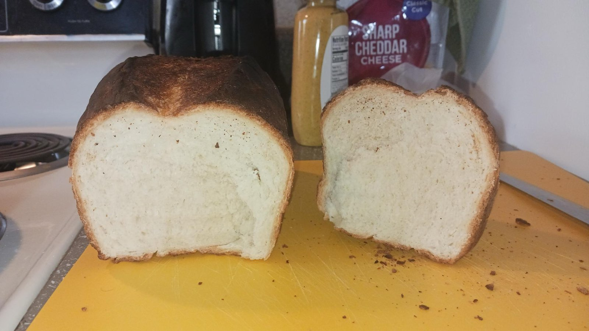

Home
Whole Wheat Bread

A simple, no frills bread recipe adapted from years of baking simple loaves of bread.
This recipe comes from hundreds of loaves of bread I've baked. Its the most simple recipe I use and is definetly not super special, but it will get the job done, especially if you need to multiply it and make many loaves. I usually make this into a round loaf, but occasionaly use a bread pan and make a sandwich-style loaf as depicted above.
Ingredients*
Steps
- Activate yeast by pitching it into a bowl of warm water (1½ cups/350mL). Add in 1 Tbsp of honey and stir gently.
- Cover and wait about 15 minutes for the yeast to begin eating the sugars in the honey. Time varies depending on ambient temperature.
- Mix dry ingredients in a bowl and add the remaining 1 Tbsp of honey. After yeast rises, mix in the yeast/honey/water mixture and stir until dough ball forms.
- Knead until dough ball is springy but firm. Cover for at least 2 hours to let rise.
- Generously flour work area, then turn risen dough onto it and begin kneading for at least 10 minutes.
- Shape dough ball into a round loaf and place on greased baking tray or turn into a greased baking pan. Let rise for at least 45 minutes.
- After some time elapses, turn oven on to 425°F (220°C) and place a recessed baking tray on lowest rack.
- Score top of your bread. Get creative and add a pattern!
- Place bread onto middle oven rack, and pour remaining 1 cup of water into the tray. Close door quickly!
- Bake for 15 minutes, then turn oven to 375°F (190°C) and bake for 35 minutes.
- Remove from oven and do not cut! Wait until bread is cool.
- Enjoy!